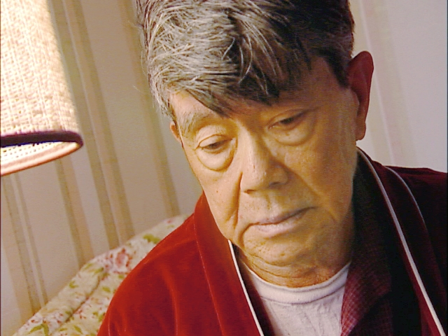

Healing the Spirit

The Asian Pacific Fund produced the film Healing the Spirit in 2004to share the stories of Asians who struggle with depression. Asianwomen have the highest suicide rate of all women over 65 in thiscountry, and Asian seniors often need care that takes their languageand cultural beliefs about mental health into consideration.
Produced in partnership with AARP and the Stanford Geriatric EducationCenter and featuring an exclusive interview with writer Amy Tan,Healing the Spirit is available in nine languages, including Cantonese,Mandarin, Vietnamese, Tagalog, Hindi, Japanese and Korean.
Colleagues at Stanford continue to use the film as a teaching resourceat national and regional conferences of geriatric educators, and theFund has received many requests to stream the video as a professionalresource for staff of Visiting Nurse Associations, online healthlibraries and other organizations.
People continue to comment on the impact of film on audiences. JoannaSeifert, for example, found Healing the Spirit in her local library andshowed the film to her social work graduate class at Sacramento StateUniversity.
“A young quiet Chinese woman raised her hand afterwards and beganto talk about similar issues in her life regarding her father andgrandparents, and soon her tears began to fall,” Joanna wrote.“Thank you for creating this video; it has touched people in aprofound manner.”
To request a free copy of the video, please contact Asian Pacific Fund and download the order form at:
http://www.asianpacificfund.org/resources/healthvideo.shtml
Shame and Silence
The Shame & Silence DVD is a training product to promotethe understanding of stigma and shame associated with mental disordersconfronted by various Asian Americans ethnic groups. This videopresentation consists of five vignettes, each focusing on a differentethnic group: Chinese, Filipino, Asian Indian, Vietnamese and Korean.These groups comprise the five largest Asian ethnic groups living inthe United States. The patients portrayed in the video are of differentages and different levels of acculturation. Each will present withtypical subtle symptoms of a mental disorder that is common to his orher culture of origin and the subtle signs of stigma.
To purchase the Shame and Silence DVD, please visit the NY Coalition Asian American Mental Health website at :
http://www.asianmentalhealth.org/resources.asp
Click here to download the order form